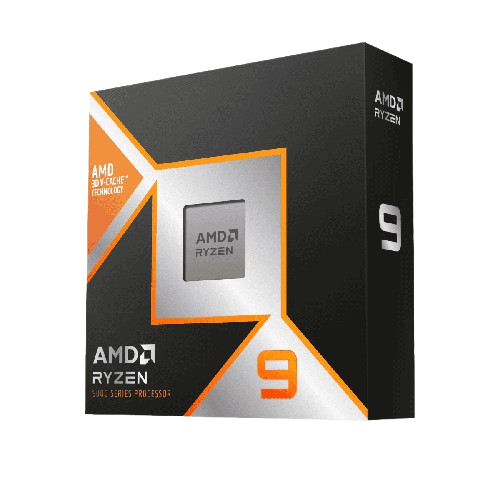
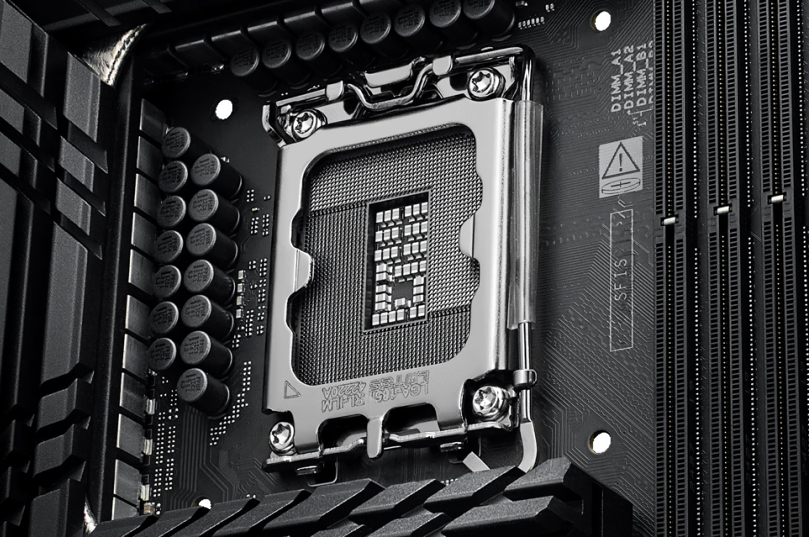
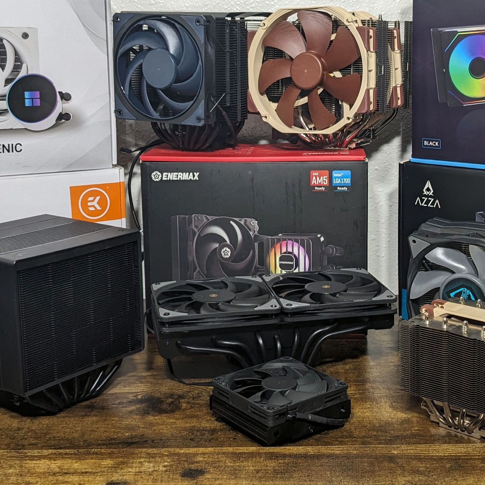
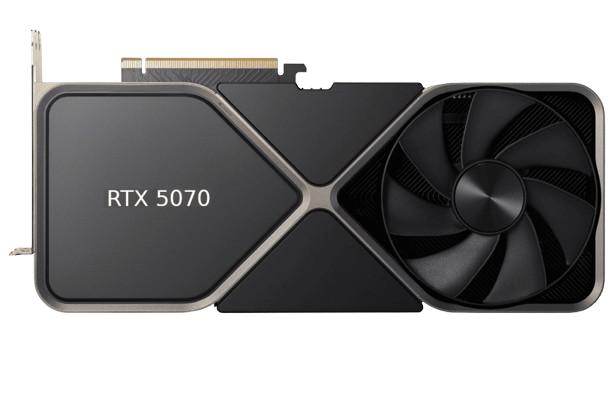
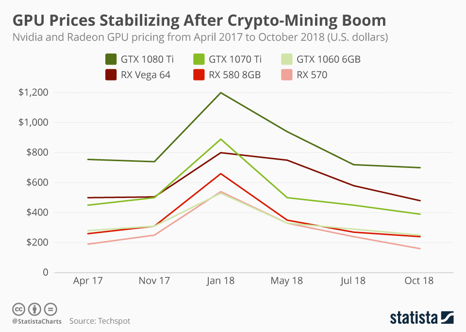
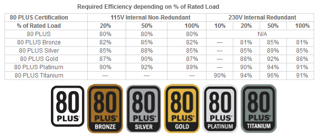

Novi modeli
AMD priprema novu generaciju Ryzen procesora
Novi procesori trebali bi donijeti bolju potrošnju energije i više performansi u igrama.

Novi modeli
Novi procesori trebali bi donijeti bolju potrošnju energije i više performansi u igrama.

Platforme
Nova platforma mogla bi tražiti drugačije matične ploče i novije memorijske module.

Hlađenje
Korisnici sve češće biraju jednostavna i tiha rješenja za svakodnevna računala.

Gaming
Prvi testovi najavljuju dobar omjer potrošnje, temperature i performansi.

Benchmark
Trgovine imaju bolju dostupnost modela srednje klase, što je dobra vijest za kupce.

Savjeti
Prije kupnje važno je provjeriti potrošnju kartice i dostupne konektore na napajanju.

AM5 platforma
Modeli srednje klase nude dovoljno priključaka i dobru podršku za moderne procesore.

Nadogradnje
Prije nadogradnje procesora dobro je provjeriti podržava li matična ploča noviji BIOS.

Kupnja
Dobro napajanje štiti komponente i pomaže da računalo radi stabilno pod opterećenjem.

Kablovi
Korisnik spaja samo kablove koji mu trebaju, pa je unutrašnjost kućišta preglednija.

SSD
Brzi SSD najviše se osjeti kod pokretanja Windowsa, igara i većih programa.

HDD
Iako su sporiji od SSD-a, nude puno prostora za spremanje slika, videa i dokumenata.